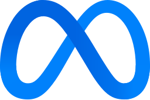
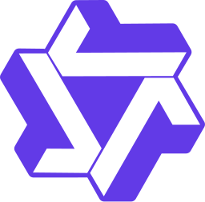
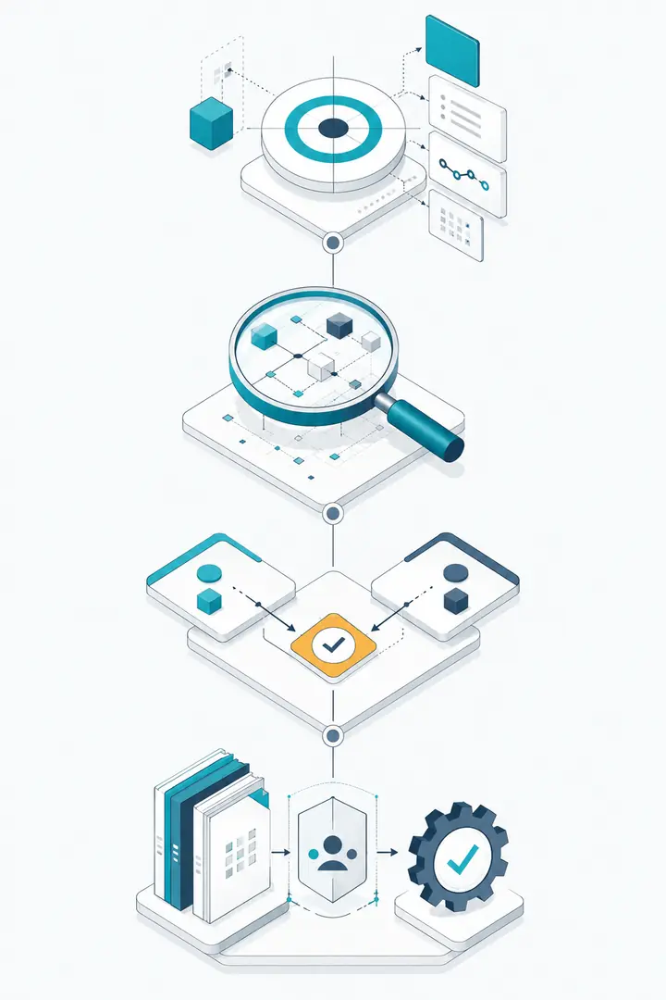
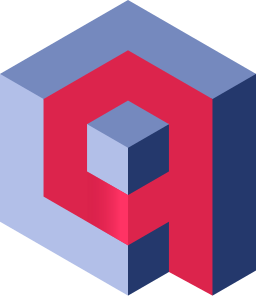
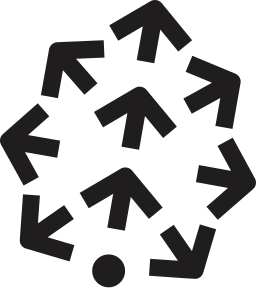
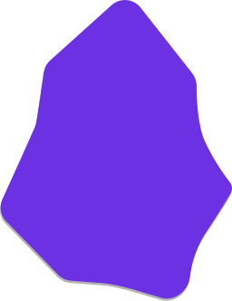
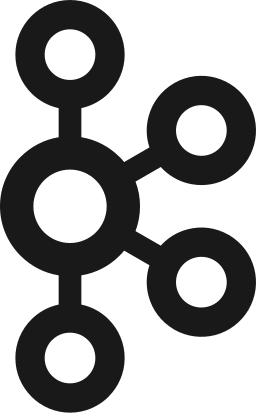
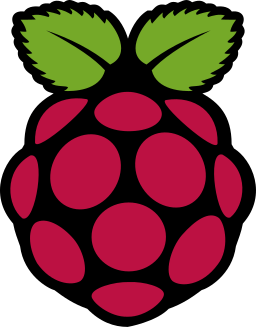

IA générative
Modèles, adaptation et exécution
- API OpenAI (GPT)

Llama
Qwen- Hugging Face
- Ollama
- NVIDIA
- Hermes Agent Nous Research
- LoRA
- QLoRA
Méthode d’intervention
datapredict part d’un besoin métier identifié : la décision à soutenir, les usages attendus et les critères d’utilité sont clarifiés avant tout choix de solution. Le niveau d’analyse et les productions sont ensuite ajustés au contexte et aux conditions d’exploitation.
Séquence d’intervention
La séquence reste stable ; la profondeur d’analyse et les productions associées s’adaptent au contexte.

Expliciter l’objectif, les usages, le périmètre, les interlocuteurs, les responsabilités et les critères de réussite.
Le périmètre, les responsabilités et la décision attendue
Établir les faits à partir des données disponibles, des processus, des dépendances et des conditions d’exploitation.
Les constats, les risques, les dépendances et les inconnues
Comparer les scénarios, rendre visibles leurs impacts et leurs priorités, puis formaliser la trajectoire retenue.
Les options comparables, l’arbitrage attendu et la suite à engager
Consolider la documentation utile, le backlog, les responsabilités, la passation et les conditions de passage au RUN.
Les responsabilités, la passation et les conditions de reprise
Socle mobilisable
Le choix des outils découle des usages, de l’architecture existante, des contraintes d’exploitation et des compétences disponibles. Ce socle présente les principaux environnements mobilisables ; il ne constitue pas un catalogue imposé.
IA générative

Llama
QwenSystèmes agentiques
RAG et recherche vectorielle

Qdrant
PineconeAutomatisation et services
 FastAPI
FastAPI
ObsidianDonnées et stockage
 MongoDB
MongoDB Neo4j
Neo4jConstruction des solutions
 Python
Python Apache Spark
Apache Spark
Apache Kafka Apache Airflow
Apache Airflow Bash
BashMise en production
 Docker
Docker Elastic Stack ELK
Elastic Stack ELKGouvernance et décision
 DAMA-DMBOK
DAMA-DMBOKDu terrain aux usages

Raspberry PiPrincipes de travail
Distinguer les éléments disponibles, les hypothèses, les risques et les décisions encore attendues.
Adapter le niveau de détail aux enjeux, aux contraintes et au niveau de maturité du dispositif.
Structurer les éléments utiles pour qu’ils puissent être compris, exploités et repris par les parties concernées.
Les exemples publics sont anonymisés et reformulés. Les données, médias et supports internes ne sont pas publiés.
Point de départ
Un premier échange permet de préciser le problème, la décision attendue et le périmètre utile de l’intervention. Aucun document sensible n’est nécessaire à ce stade.